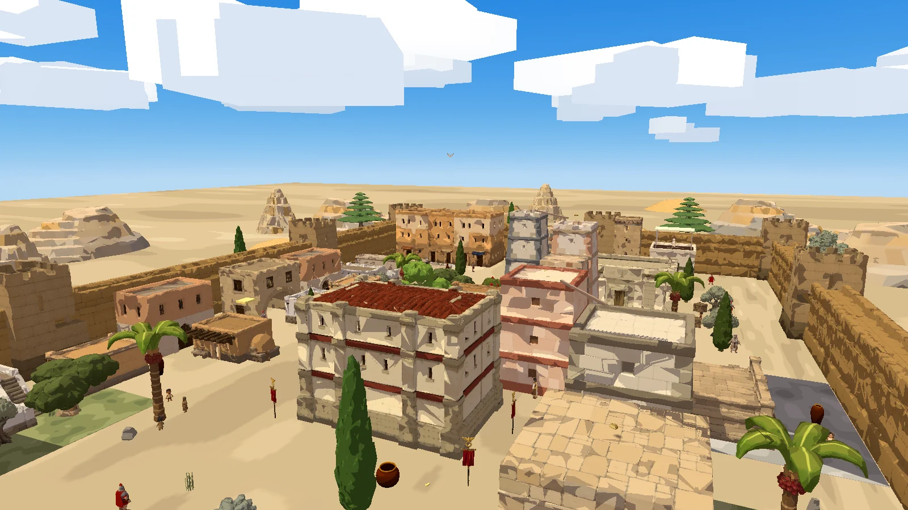

Find your way
Run, jump and climb. Discover routes through narrow streets and over sun-warmed rooftops.

An EIC Kids Ministry adventure
A small letter.
A journey of great faith.
Walk the ancient streets. Find a way across the rooftops. Carry a message worth the journey.
Free to try · Android · In development
A world in the making. A demo you can play today.
Join the journey01 — Step into the story
Become Tychicus, a messenger with a letter to deliver. Explore a biblical world of sandstone streets, Roman guards and unexpected paths above the city.
Run, jump and climb. Discover routes through narrow streets and over sun-warmed rooftops.
Watch your Breath and Faith. Choose your moments and slip past Roman patrols.
Keep the letter moving. Reach your destination before its ink fades away.
02 — Beyond the city gates
Warm stone. Quiet courtyards. A skyline waiting to be explored. Take a closer look at the world taking shape inside The Messenger.
Scenes captured during development. The world, lighting and animations are still being refined.
03 — From the workshop
Every adventure starts with its building blocks. A selection of character artwork and 3D model previews behind the game.
The messenger at the heart of the journey.
A reason to take the quieter route.
Sandstone, stairs and another way up.
A new perspective above the city.
Character and environment artwork are development references. The courtyard house is a 3D preview from Meshy; these are not gameplay screenshots.
04 — Your journey starts here
Try the first steps of The Messenger on your Android phone. This is a playable work in progress, made with care for EIC Kids Ministry.
Still building. Still learning.
Thank you for being part of the journey.
Android APK · Free download
Direct download from our GitHub release. Best played in landscape.
Checked 17 November 2026. No participating engine flagged this file as malicious.
View the independent reportA scan is not a security certification or a guarantee of safety. Results may change; some engines cannot process APK files.
The checksum identifies the exact file linked to the report.
d4827796dac684fe29c5d2960a644c5a36b4e7368572e5cd6a36fc0c8f9e6c81Before you set out
A small guide to installing and trying the demo.
You can turn off the source's installation permission afterwards. Keep Play Protect enabled; if it warns about the app, stop and review the warning.
No. This is a development demo. Expect unfinished content, bugs and changes to graphics, animation, controls and performance. Progress may not carry over to later versions. The website and game will continue to evolve.
The APK targets 64-bit Android devices (ARM64) running Android 7.1 or later. It has been tested on a Samsung Galaxy Note20 Ultra with Android 13; performance and compatibility on other devices are not guaranteed. Allow extra storage for installation. This APK does not install on iPhone.
The exact downloadable APK was submitted to VirusTotal. On 17 November 2026, its report showed 0 detections from 66 engines. Eight additional engines could not process the file type. You can open the public report and compare the SHA-256 checksum above.
This is a malware scan, not a complete security audit, endorsement, or guarantee that the app is free from vulnerabilities. Keep Android and its security protections up to date.
Found a bug or have an idea? Open an issue on GitHub with your phone model, Android version and what happened. A GitHub account is required. Please do not include passwords or personal information.
The Messenger is an experimental demo under active development, provided “as is” and without warranties. Downloading, installing and using it is at your own discretion and risk. To the extent permitted by applicable law, the creators and ministry are not liable for damage, data loss or other issues arising from its use. This notice does not exclude rights or liabilities that cannot legally be excluded.
Children should install and play with a parent or guardian's permission. The linked malware report records a scan of this specific build; it does not certify the app as risk-free.